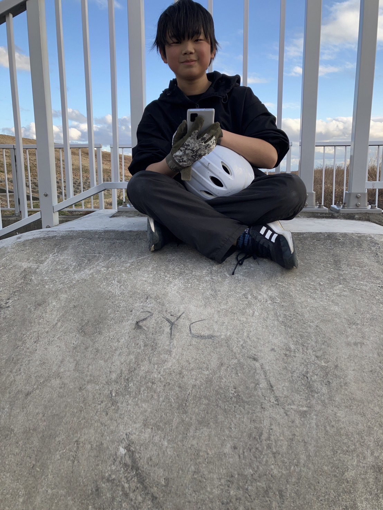
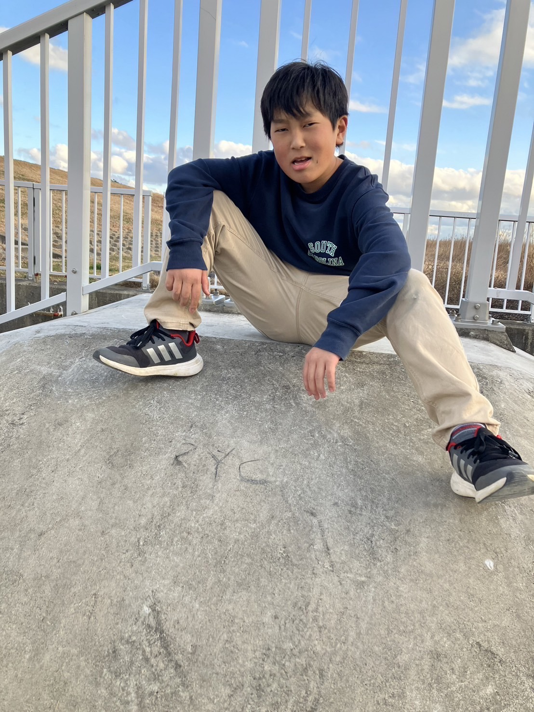
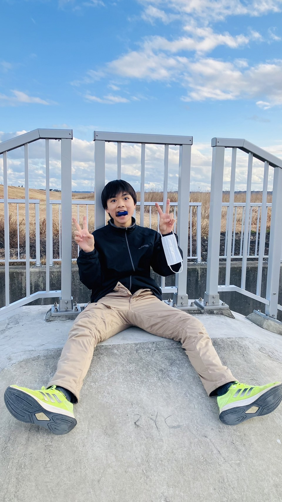

最高のサービス
主にお皿や鍋、フライパン、その他諸々をやらせていただきます。
主に犬のお散歩ですが、猫のお散歩もOKです。
家の草抜きや、お掃除をやらせていただきます。
一時間1000円として、何かの店の手伝いを1時間以内なら何でもします。
友達として、一日中遊びます！
SYCについて
SYC(SOSUKE YUA CHIHIRO)は、便利なサービスを提供するためのプラットフォームです。お皿洗いから家のお掃除まで、様々なお手伝いを通じて、お客様の暮らしをサポートします。
依頼のメールの送り方
このサービスに依頼する場合、「依頼のメールを送る」ボタンをクリックして、メールに以下の情報を入力してください。
依頼内容を書いてください。例えば遊びの依頼だとしたら、「こんにちは！遊びの依頼を1日したいです！よろしくお願いします！住所: ここに何時に来てください！」などです。
可能な範囲であれば、お金を要求する場合がありますが様々な依頼が可能です。
メールアドレス: syc.japan0325@gmail.com


